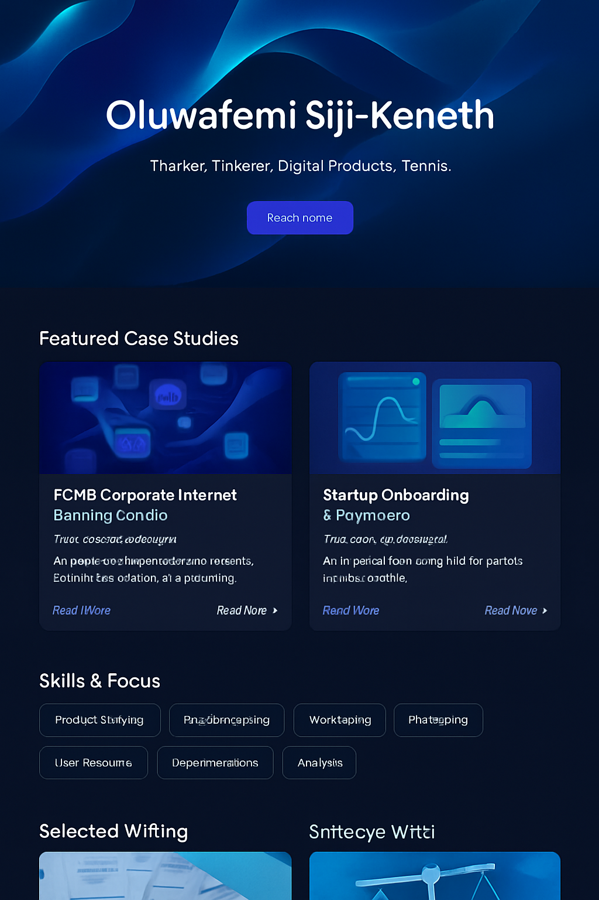

FCMB Corporate Internet Banking
From manual processes to a product‑led platform

Context
First City Monument Bank (FCMB) is a leading Nigerian bank serving thousands of corporate clients. Its legacy internet banking platform relied heavily on manual approvals and siloed systems, resulting in slow onboarding and inefficient workflows.
Goals
- Streamline onboarding and payments for corporate clients.
- Reduce manual approvals and turnaround times.
- Increase revenue by expanding transaction volume.
Approach
- Discovery & stakeholder mapping: interviewed finance controllers, treasury heads and operations teams to understand pain points.
- Journey mapping & requirements: mapped the end‑to‑end payment journey, highlighting friction and opportunities for automation.
- MVP scoping & delivery: defined a minimum viable platform and prioritised high‑impact features such as self‑service onboarding and bulk payments.
Artifacts
During the project we created service blueprints, wireframes and user stories. We also collaborated closely with legal to redesign approval workflows.
Results
| Metric | Before | After | Unit |
|---|---|---|---|
| Net revenue (per quarter) | 1.1 | 3.0 | USD M |
| Onboarding time | 10 | 3 | days |
| Manual approvals | 7 | 2 | steps |
Impact
The new platform increased client satisfaction, reduced operational costs and positioned FCMB as an innovative leader in B2B banking. Post‑launch feedback from clients highlighted the ease of managing payments and approvals in one place.
What’s Next
Future iterations include integrations with ERP systems, advanced analytics dashboards and expanding the platform to regional subsidiaries.